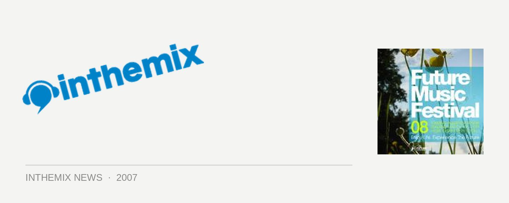

More Future Music Festival lineup leaks!
Anticipation for next year’s edition of the massively popular Future Music Festival is reaching fever pitch, and with the days counting down to the announcement at the end of November there’s been more names leaked for the touring lineup. Through various sources it’s been revealed that hard dance star Eddie Halliwell, progressive trance favourite Markus Schulz and house legend Roger Sanchez are all set to head to Australia for the festival in March, 2008!
These big names join the previously announced hot-tip of Sasha & Digweed (news HERE) and legendary live act the Chemical Brothers (news HERE) who will be in town right about the time of the tour. Future Entertainment boss Mark James spilled the beans on the ITM Forums regarding Eddie Halliwell (read HERE) and Marcus Schulz (read HERE), while Sanchez himself revealed that he’ll be journeying back to Australia through his MySpace page.
Tour dates for the festival have also appeared online, so mark these in your calendar today – you won’t want to miss it!
Sat Mar 1 – Brisbane
Sun Mar 2 – Perth
Sat Mar 8 – Sydney
Sun Mar 9 – Melbourne
Mon Mar 10 – Adelaide
Hyped to the max? Breathless in anticipation? Check out ITM’s Festival Page!